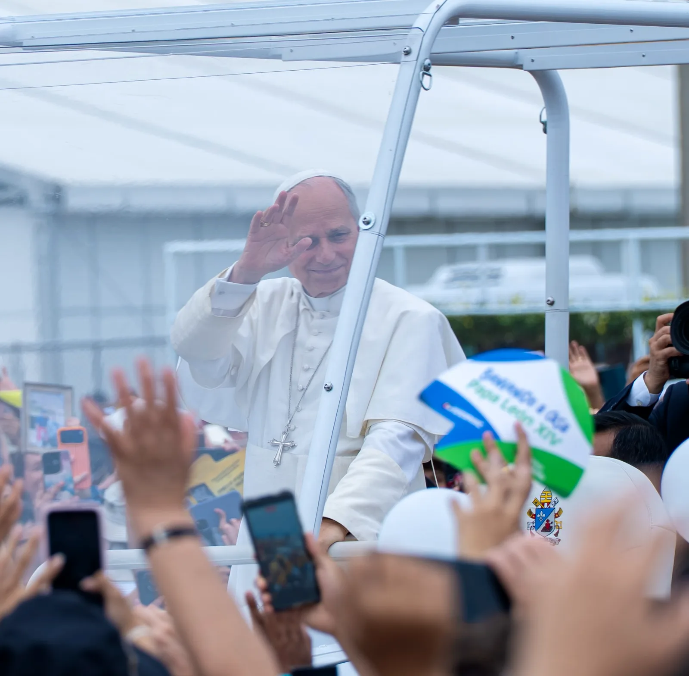

¿Qué nos pidió el Papa como Iglesia?
Seis frases del documento, con sus palabras exactas. Cada una indica dónde la dijo y en qué página puedes leer el mensaje completo.
-
Una Iglesia que es hogar
«…encuentren en la Iglesia un hogar donde sean recibidos, escuchados, amados y conducidos hacia Jesucristo.»
Encuentro con los obispos del Perú, Lima. Página 14
-
La Iglesia es de Cristo
«La Iglesia no nos pertenece; es de Cristo.»
Encuentro con los obispos del Perú, Lima. Página 13
«No hay misión sin comunión.»
Encuentro con consagrados y consejos pastorales, Chiclayo. Página 35
-
Todos somos Iglesia
«Antes de cualquier servicio, cargo, profesión o ministerio, somos bautizados.»
Encuentro con consagrados y consejos pastorales, Chiclayo. Página 34
«La participación de los laicos no es una concesión, sino una expresión de su dignidad bautismal.»
-
Puentes, no muros
«Perú lo necesita mucho, necesita una Iglesia que siembre amor, capaz de construir puentes en donde otros levantan muros.»
Hora Media en la Catedral de Lima. Página 16
«Perú necesita más oasis fraternos y menos desiertos individualistas.»
Casa de las Hermanitas de los Ancianos Desamparados, Callao. Página 64
-
Evangelizar es dar testimonio
«Evangelizar no es imponer doctrinas ni confiar en estructuras eficaces, sino dar testimonio de ese encuentro real con Jesucristo.»
Homilía en las Pampas de Pimentel, Chiclayo. Página 30
-
A los jóvenes: «¿Qué buscas?»
«Dios los ha creado capaces de realizar un bien que nadie más podrá hacer exactamente de la misma manera.»
Vigilia con los jóvenes, Estadio Nacional. Página 24
La oración que rezó con ellos:
Jesús, en ti confío.

«Mi viaje termina, pero ¡el tiempo de la misión continúa!»
Homilía en la Base Aérea Las Palmas, lunes 16 de noviembre
Qué hay en el documento
Todos los mensajes del viaje, en el orden en que los pronunció. Toca un mensaje para abrir el documento en esa página.
Llévalo a tu parroquia
Imprímelo para tu grupo de oración, léelo en la catequesis o envíalo al grupo de WhatsApp de tu comunidad. Es gratuito.